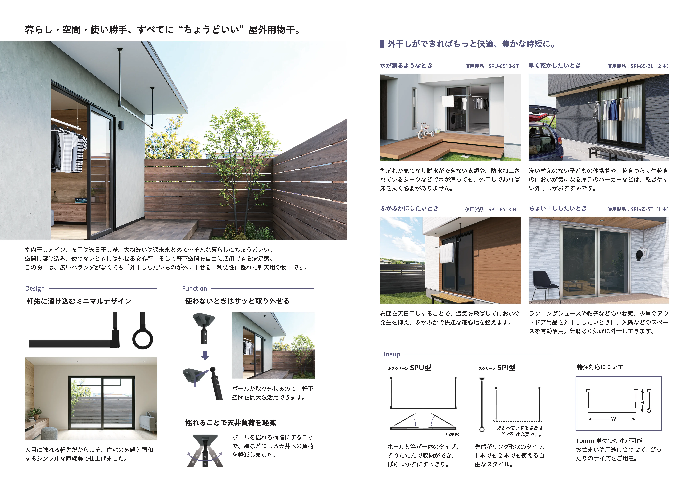
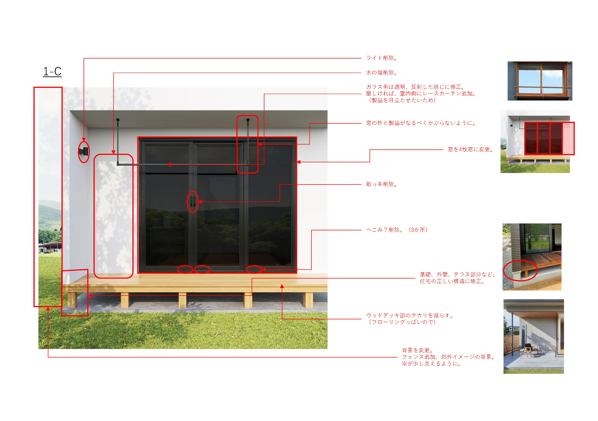

リーフレット/総合カタログ/SNS
BtoBtoC商品「物干金物新シリーズ」トータルプロモーション
エディトリアル：リーフレットの企画・デザイン・ライティング、総合カタログへの展開
ディレクション：CG制作会社への指示・進行管理、印刷会社の選定・入稿管理
SNS・動画：Instagramカウントダウン施策の企画・制作、取付説明動画の撮影・編集

概要・課題
主力製品である物干金物の新シリーズ発売に伴う追加プロモーション。発売当初は注文住宅や大手ハウスメーカーをターゲットに販促活動を行っていましたが、分譲・建売住宅を手掛ける工務店やデベロッパーへの営業を展開することに伴い、ターゲットの分析と内容の再構築がミッションでした。機能面（機能的価値）の訴求だけでなく、施主の暮らしを彩る「情緒的価値」言語化、視覚化し、ターゲットに響かせるかが課題でした。
こだわり・戦略
「ユーザーの声」を反映したデザイン検証：
ターゲット層に近い年齢層の社員に対し、制作途中のレイアウトやコピーについてヒアリングを実施。主観的なデザインに陥ることなく、営業や施主の「生の声」を取り入れ、機能性と情緒性がバランスよく伝わる構成を追求しました。
外注と内製による最適化：
ハイクオリティな施工イメージが必要な画像は、CG制作会社へ指示書を提示し密にコミュニケーションをとりながらディレクション。一方で、スピードとわかりやすさが求められる取付動画は社内で自作の什器を組んで撮影から編集まで内製。コストとクオリティのバランスを最適化しました。
期待感を最大化するSNS施策：
発売前からInstagramでカウントダウン方式の「チラ見せ」リール動画を投稿。ユーザーのワクワク感を醸成する仕掛けを作り、発売と同時に高い認知度を獲得する動線設計を行いました。

